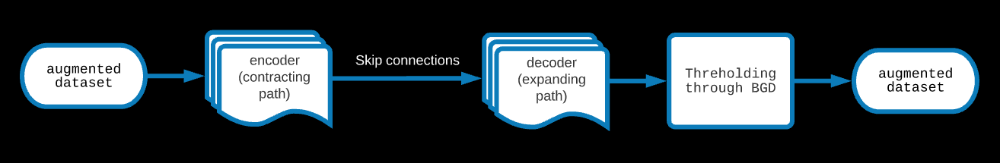
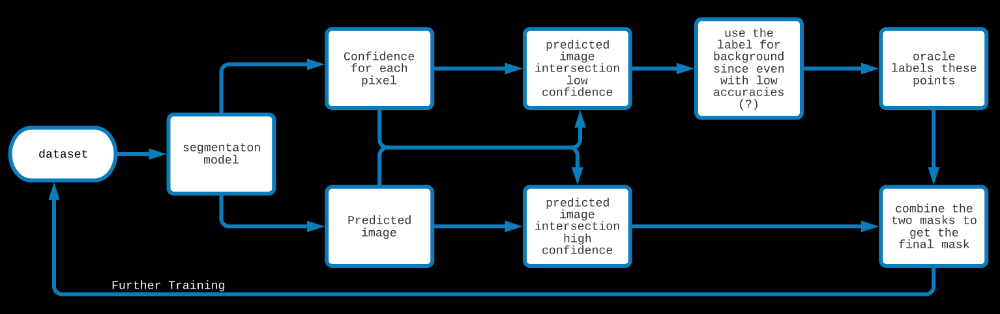

What kind of salts are present on the Lineas of Europa?
Proposal
Theory

Introduction
Europa's Lineas
"There might be octopuses swimming in the depths of Europa, for all we know" - Nishant to Rion
Water, some esssential chemicals and a source of energy. That's all life needs, these are the "ingredients" for life. Europa, an icy moon of Jupyter,
of about the same size as our own moon (but waayyy more interesting than our moon) has all the necesaary ingredients. But you won't think so if you just
take a look at it - I mean, it looks dead and diseased (with all those red scars!). But what's interesting about this moon is not visible from outside.
It has an ocean which contains about twice as much water as earth below it's thick icy crust. Below that ocean, are rocks and possibly, geothermal
activity. But that geothermal activity is not what's keeping the ocean from freezing, obviously it's not the sunlight which is aborbed and reflected
by the thick icy crust. This somewhat magical, somewhat mysterious, source of energy is Jupyter itself. Specifically, it's the tidal forces of Jupyter on
Europa. It is this same phenomena which results in those scars. But why are the scars red? We can only guess. This phenomena makes us rethink
the definition of the goldilocks zone. It seems like moons of massive planets, far away from the host star are also inhabitable and we should broaden our
horizon and look for exo icy moons as potential candidates for life.
Clearly, the possibility of life makes Europa a very interesting target. Afterall, if we find life on Europa, however small and primitive may it be,
it will tell us one thing very clearly - if life can happen, it will happen. And our whole universe must be beaming with life.
The most interesting geographical feature of Europa are the Lineas (short for Lineaments), the red scars, so to speak. The exact reason for their
formation is unknown but people have maade some guesses. It might be partly due to tidal forces from Jupyter and partly due to asynchronous rotation
of Europa with Jupyter.
We aren't yet sure what kind of salts are present there. In this project, we will investigate the Lineas, try to find out what
salts are present in the Lineas and see (and hope) something organic comes up. Hydrated salts have already been detected in Europa and it seems just
like a matter of time before we find organics.
Goals
-
Test out different ML techniques (both traditional and deep learning) and find a Linea recognition model with high accuracy.
-
Using spectroscopic data, find the salts present in the Lineas.
Teammates and Mentors
-
Teammates
-
Nishant Pratim Das,
4th year I.M.Sc, School of Physical Sciences
-
Rion Glenn Nazareth,
4th year I.M.Sc, School of Physical Sciences
-
Mentors
-
Prof. Guneshwar Thungjam,
Assistant Professor and Chairperson, School of Earth and Planetary Sciences
-
Prof. Subhankar Mishra,
Reader-F, School of Computer Sciences
The Dataset
1. Creating the Dataset

The images were collected from Galileo's Solid State Imaging instrument which have been made public by NASA through PDS-atlas.
Seven 800x800 images have been marked by hand using arivis. Two such images are shown above. Since the edges of the lineas
are not very clear, this gives rise to a Bayesian error. Some of the ridges besides the Lineas cast shadows which are hard to
differentiate from the Lineas themselves. This gives even more Bayesian error.
2: Data Augmention and Imbalance Handling
Since CNNs rely on augmentation of the data to make the feature extractor invariant of orientation and position of the object in an image,
the dataset was augmented using rotations (upto 90 degree), horizontal and vertical flips, zooming and stretching along different directions.
This was done through keras.
In our case, the minority class (Lineas) are too less in number. Because of this, even if the model predicts almost all the pixels to be in the majority
class, the accuracy it gets is very high. The way to tackle this problem is to undersample the majority class and/or oversample the minority class.
Our dataset first RUSed (random deletion of majority class points) and then SMOTEd (synthetic generation of minority class datapoints).
This improves the IoU significantly. These techniques have been explained in some detail in the theory section.
Models
1: Image Filters -> Random Forest
Features are extracted through traditional image filters and passed to a Random Forest.
Dimensions are reduced for improving speed and decreasing expense.
Since there are many hyperparameters, like the SMOTE and RUS ratios (dataset handling), min_samples_split (RF) and n_estimators(RF),
we believe tuning these hyperparameters might significantly improve the results, but GridSearchCV is too expensive for us.
2: CNN-Random Forest Hybrid

In this model, A CNN is trained (with a fully connected dense layer in the end) with an augmented dataset, the metric is set as jaccard.
The feature extractor of the CNN is used to extract features from the images and these are passed to a Random Forest to classify each pixel.
Instead of building a CNN and training it to get a feature extractor, one can also get pretrained feature extractors
which are basically image segmentaion CNN frameworks trained on standard datasets.
3: U-NET

One of the standard image segmentaion, state-of-the-art model. In this model, a contracting CNN path (encoder) is built through convolutional and max pooling layers.
These are skip connected to an expanding path (decoder) made through convolutional and upsampling layers. The metric that has been aimed for is the jaccard.
The results of the UNET for binary classification are the probabilistic; to get an actual mask, one has to set a threshold on the prediction of the UNET.
This was found through a BGD algorithm.
Results
1. The Scores
Model
|
Params |
|
mIoU |
|
IoU |
|
Pixel Accuracy |
|
Dice (f1) |
|
|
test% |
train% |
|
test% |
train% |
|
test% |
train% |
|
test% |
train% |
|
|
|
|
|
|
|
|
|
|
|
|
|
|
|
|
|
|
|
CNN-RF |
|
s=0.3,r=0.7; FE: 128->64->8 |
|
50.95 |
99.91 |
|
27.63 |
99.92 |
|
76.58 |
99.96 |
|
43.30 |
99.96 |
|
|
|
|
s=0.3,r=0.5; FE: 128->64 |
|
56.90 |
99.58 |
|
32.03 |
99.44 |
|
83.20 |
99.81 |
|
48.52 |
99.72 |
|
|
|
|
s=0.3,r=0.7; FE: 128 |
|
56.33 |
97.72 |
|
31.23 |
96.95 |
|
82.88 |
98.98 |
|
47.60 |
98.45 |
|
|
|
|
|
|
|
|
|
|
|
|
|
|
|
|
|
|
|
UNET |
|
t =0.4 |
|
47.12 |
37.04 |
|
26.33 |
23.37 |
|
71.21 |
57.16 |
|
41.68 |
37.89 |
|
|
|
t =median |
|
38.48 |
37.77 |
|
24.49 |
23.53 |
|
58.82 |
58.18 |
|
39.34 |
38.10 |
|
|
|
t =mean +1std |
|
51.50 |
56.21 |
|
25.32 |
22.99 |
|
79.25 |
78.86 |
|
40.41 |
37.39 |
|
|
|
t =mean +2std |
|
46.89 |
44.21 |
|
11.39 |
5.64 |
|
82.78 |
82.96 |
|
20.45 |
10.68 |
|
|
|
|
|
|
|
|
|
|
|
|
|
|
|
|
|
|
|
IM-RF |
|
s=0.3,rus=0.5 |
|
54.73 |
76.51 |
|
25.95 |
67.95 |
|
87.26 |
88.66 |
|
41.21 |
80.92 |
|
|
|
|
|
|
|
|
|
|
|
|
|
|
|
|
|
|
The parameters for CNN-RF are the SMOTE and RUS ratios and the number of layers in the Feature Extractor (FE). The parameters t for U-NET is the threshold set of it's result.
2: Prediction for an Unseen Image
Attempts to Improve Results
1. Anomaly Detection (executed)

Since Lineas are connected structures, isolated points marked as Lineas are likely to be outliers. To exploit this fact, DBSCAN was run on the set of
points predicted to be on the lineas with n (min samples for a cluster) = 2 and epsilon (distance below which point will be in the same cluster) = 1
and the euclidean metric and dropped all the outliers. This increased the precision (and hence the f1 score) ever so slightly.
In this image, the small blue dots are pixels classified as Lineas which belong to one or the other cluster. The red dots are outliers and are dropped.
2: Active learning (under execution)

In the case of a Decision Tree for binary classification, the prediction for a new datapoint is the majority occupancy in the leaf node
where the new datapoint lands and the confidence is the ratio of the majority to total points in that node. For a Random Forest,
the prediction is the result of the poll among these DTs and the confidence is the average value of the confidence among the DTs.
In this approach, because of the high cost of labelling the pixels, we start using the model early even when it has low accuracies.
We first ask the model to label an unseen image. Along with the label, we also demand a confidence measure for each pixel.
We trust and use the model's label of points for which the model has high confidence and we label the rest of the points ourselves (the oracles).
Additionally, since our model performs so well in detecting the background, we could trust it's label for a background with a bit lower confidence
than the threshold set for Lineas. Ultimately, we get a mask created by the model and the oracle. With more iterations, the oracle's
work decreases and the model becomes more and more confident.
This is an image unseen by the model. In this image, we only have to label the red section as Lineas and background. The rest has been
classified as background by the model.
3: Interesting ideas (?)
-
Update the confidence in individual Decision Trees in the Random Forest through anomaly detection using DBSCAN
-
Active Learning with Random Forest for Image Segmentation is possibly a novel idea. It's possible that low training data (which is when active learning is used),
it works better than Active Learning with UNET.
-
Giving different weights to different images based on the oracle's confidence on each image. The images with higher confidence could be sampled more.
References and Codes
Papers
-
U-Net: Convolutional Networks for Biomedical Image Segmentation by Olaf Ronneberger, Philipp Fischer, Thomas Brox
-
Assessing the Role of Random Forests in Medical Image Segmentation by Dennis Hartmann et al.
-
A Hybrid Cnn-Rf Method for Electron Microscopy Images Segmentation by Guibao Cao et al
-
Active Learning with Bayesian UNet for Efficient Semantic Image Segmentation by Isah Charles Saidu et al
Codes
Discussions
Concluding Remarks
In this project, we hoped to find the salts in Europa's Lineas. As a first step, we decided to make a Linea segmentaion model.
We made different models which work on three different principles, however because of shortage of training data,
our models are currently struggling. There is no easy fix for it as far as we know and one has to
expend time and effort in creating the masks. Augmenting the images helps a little and Active Learning could easen the process significantly.
Our current aim is to use Active Learning and see if the IoU improves. If we see that active learning improves the scores,
that would be proof of concept for our project. Some interesting ideas like using anomaly detection in image segmentaion to update the weights (teach)
of the model and using weighted augmentation have been proposed but due to time constraints, could not be executed. Yet. Various experiments have
been performed on the models like transfer-learning, thresholding using BGD, dimension reduction etc. Although we only have seven masks,
since two of our models are based on Random Forest, running GridSearchCV to optimise the hyperparameters is not possible, atleast with
the machines we have access to. To improve the models further, we have handled the imbalance in our dataset and tried to find the anomalies
in the predictions. Assuming Active Learning improves the results significantly, we would like to finish this part of the project
by choosing the model with highest validation accuracies. Then we would move on to the second goal and hopefully,
we could analyse the minerals in the Lineas.
The Bigger Goal
Once we have the Linea recognition model ready, we could do a spectral analysis of the Lineas.
As a first step, we would like to find the dominant component in the spectra which would likely be magnesium sulphate or sulphuric acid.
But, the final step would be to unmix the spectra and look for prebiotic compounds and chemical biosignatures in the Lineas.
Oh how grand that would be!